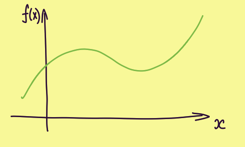

<input type="checkbox" id="isClose"></input><div class="left-menu"><div class="control-panel"><label for="isClose"><div class="isClose"></div></label></div><div class="left-side-menu"><ul><a href="#теория-вероятости"><li>Теория вероятости</li></a><a href="#базовые-понятия"><li>Базовые понятия</li></a></ul></div></div><div class="main"><link rel="stylesheet" href="../../../static/style.css "><h1 id="теория-вероятости">Теория вероятости</h1>
<p></img></p>
<h1 id="базовые-понятия">Базовые понятия</h1>
</div>